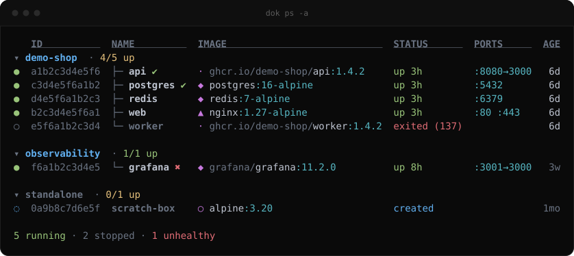
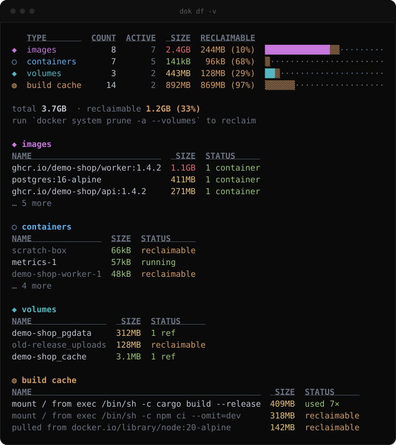
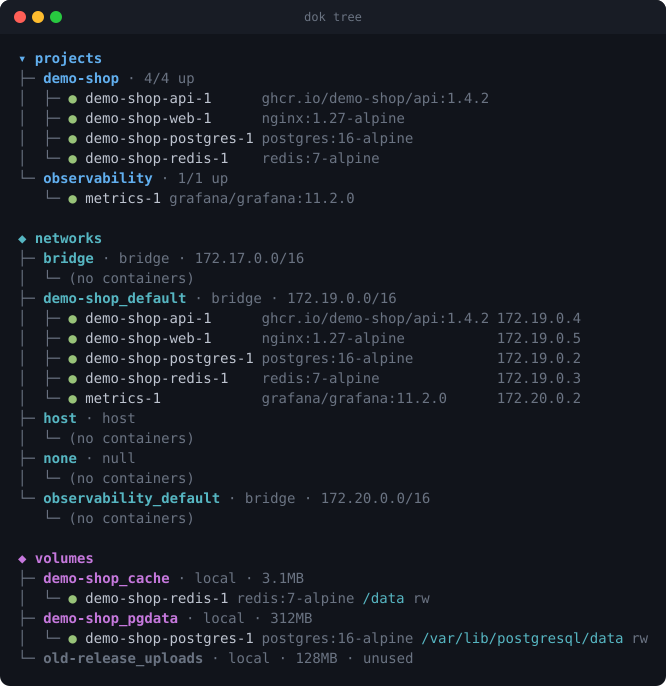
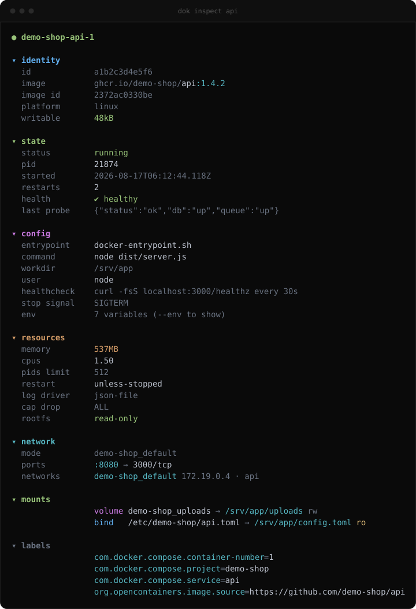
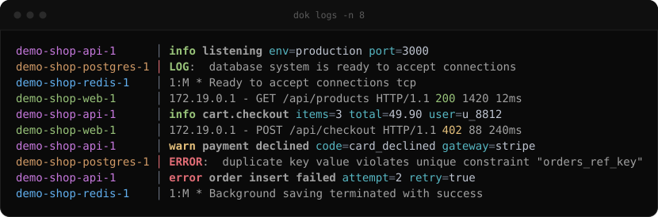

Docker output,
made readable.
cool-docker-commands ships one binary — dok. It reads the
Docker socket and prints it for humans: colour that means something, compose
grouping, human sizes and ages, and real themes.
What eza is to ls.

Ten commands
One static screen each. Pipes like any Unix tool.
- dok pscontainers, grouped by project
- dok imagessize and age gradients
- dok dfdisk usage, reclaimable bars
- dok inspectthe JSON, folded and masked
- dok logsmerged tail, level colouring
- dok topprocess tree inside containers
- dok treeprojects, networks, volumes
- dok statslive CPU / memory dashboard
- dok eventscolour-coded daemon events
- dok themeslist and preview themes
Why it exists
Same data, rendered for a human instead of a parser.
- read-onlyno start, stop, exec or rm — ever
- no shell-outtalks to the socket directly
- one binaryno runtime, nothing to daemonise
- ci-safecolour and icons off when piped
- themablepalette, glyphs and layout
- demo mode
dok ps --demo, no daemon needed
0commands
0themes
0runtime deps



Install
One binary, no runtime dependencies. Needs a reachable Docker daemon — it honours DOCKER_HOST, the default socket and Windows named pipes.
$ brew install alsaadii98/tap/dok$ cargo install dok-cli # crate dok-cli, binary dok
$ paru -S dok-bin # prebuilt $ paru -S dok # from source
$ curl -LO https://github.com/alsaadii98/cool-docker-commands/releases/latest/download/dok_amd64.deb $ sudo dpkg -i dok_amd64.deb
$ curl -LO https://github.com/alsaadii98/cool-docker-commands/releases/latest/download/dok.x86_64.rpm $ sudo rpm -i dok.x86_64.rpm
$ nix run github:alsaadii98/cool-docker-commands$ scoop bucket add dok https://github.com/alsaadii98/cool-docker-commands $ scoop install dok
$ git clone https://github.com/alsaadii98/cool-docker-commands $ cd cool-docker-commands && cargo build --release
Themes
Palette, glyph set and layout — not just colour. The ascii theme is genuinely ASCII.
default
dracula
nord
gruvbox
catppuccin
tokyonight
solarized-light
mono
matrix
ascii
Configure
dok themes --init writes this to ~/.config/dok/config.toml.
theme = "mine" icons = "nerd" # auto | nerd | unicode | none [themes.mine] base = "gruvbox" # any built-in glyphs = "heavy" # unicode|ascii|heavy|slim layout = "grid" # default|ruled|grid|quiet header = "dim" # underline|bold|dim|caps green = "#00ff00" # override any role
Or just dok ps --theme nord.

level msg key=value.